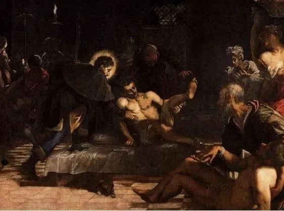
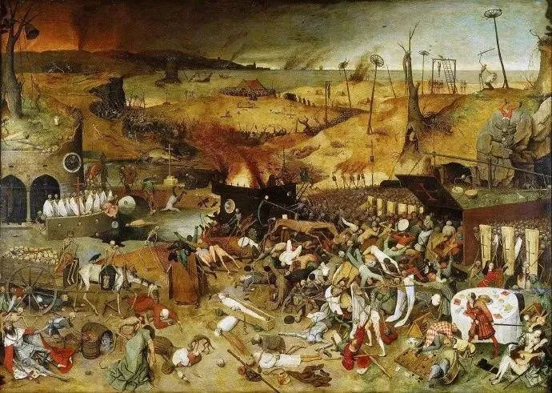

黑龙江新冠死亡率重症率双高，遥远北国缘何成重灾区？
原文链接 备份链接 【财新网】（记者 宿慧娴）距离武汉超过2000公里的黑龙江，深居中国东北部边境，却与几个同湖北来往密切的省份一样，“意外”地成为此次疫情重灾区之一。在东北三省中，黑龙江是唯一一个累计病例数字突破400的省份，周边的辽 …

点击上方物质生活参考加星标！
物质生活参考

作者：赵小薇
来源：物质生活参考（ID：wzshck）
01.
第一次对“黑死病”三个字有直观了解，是在维也纳市中心的格拉本步行街上。一根白色纪念柱立于最繁华的街巷中央，巴洛克风格精妙繁复的浮雕，在林立的各色精品店铺之间，毫无逊色之意。
如果不是查阅资料，很难想象这一浪漫华美的高大立柱，是为纪念死于残酷疫情的维也纳人而立。1679年，黑死病席卷维也纳，夺去了城市中几乎三分之二人的生命。出生于维也纳的神圣罗马帝国皇帝利奥波德一世，决定修建一座纪念柱为臣民祈福。
纪念柱为大理石质地，中间层雕刻的，是半跪在地上、摘下皇冠为民祈福的利奥波德一世；其上为金光闪耀的圣三位一体像，其下是一群天使立于云端。颇具戏剧性的一幕是，一位天使正将女巫推向地狱，女巫所映射的，是使无数人丧命的鼠疫。
此后，我又在捷克的ck小城，匈牙利的布达佩斯，以及斯洛伐克的首都布拉迪斯拉发等地见过为黑死病而立的纪念柱或纪念碑。它们或是融入繁华街巷之中，或是矗立于热闹广场之上，游客偶尔流连于此，驻足拍照，更多的是当地人，坐在台阶下或雕塑旁，歇脚、聊天、谈情，吃刚从便利店买来的午餐。

对于外来客而言，这一场景的反差稍显强烈。黑死病，即鼠疫，人类历史上最严重瘟疫之一。一旦染病，患者皮肤就会出现许多黑斑，治愈毫无可能，死亡过程非常痛苦。格拉本大街纪念柱的底座上，除了常见的圣经故事，也雕刻着民众在疫病中挣扎的场景，染病、哭泣、死亡、送葬……
画面真实而具体，画中人沉浸于对疾病无能为力的哀痛之中，白色大理石上写满灰暗和绝望；而在这线条之下，就是拥挤人群的熙来攘往，是露天咖啡的热闹嘈杂，是喧嚣和生机。
劝诫与警示，自然融入到一个城市的生活之中。时空交错间，生与死，痛与乐，都很鲜活。
02.
发生于维也纳的这场黑死病，可以看作是中世纪大瘟疫的余波。这场席卷中世纪欧洲的劫难爆发于1437年，此后四百余年间，因此丧生者多达7500万至2亿。仅1347年至1353年间，黑死病就夺走了2500万欧洲人的性命，占当时欧洲总人口的三分之一。
每三个人中就有一个人死于非命。生存于死亡阴影笼罩之中的艺术家，不免将这一时代特质投射至作品之上。因而，行走于欧洲的美术馆、博物馆乃至教堂、公墓之中，常常能与这一恐怖事件的“亡魂”不期而遇。教堂里手持镰刀，收割生命的死神像，置于棺木之上肉体糜烂、骨架凸显的的尸体雕塑，在某种意义上，这些作品与纪念柱一样，都是黑暗时代生死记录。
画作更为常见。西班牙普拉多博物馆中，有尼德兰画家老彼得·勃鲁盖尔的作品：《死亡的胜利》。这幅绘制于1562年的油画，就是以骷髅亡灵军团的隐喻，记录了这次中断了人类历史进程的黑死病瘟疫。

画面之中，死神化身成骷髅，以棺材为盾牌，阵势浩荡地向世间血肉之躯发起进攻。被收割的头颅塞满马车，尚未死去的或已被砍倒，或面临斩首，或挣命逃窜。张皇的红衣贵妇陷入骷髅魔爪，而她身前，还有宴席与纸牌——在灾难来临之前，人类沉迷于享乐，一无所知。
无论是热恋中的情侣，衣着光鲜的富人，还是全副武装的骑士，在骷髅军团的杀戮下皆毫无退路可言。如同瘟疫面前众生平等，国王或贫民，都无法逃脱死亡的厄运。
同样的死亡命题，同样受十四世纪大瘟疫影响，这幅画或可看作画家对其极为推崇的博斯的一种致敬。博斯的名作《人间乐园》也收藏在普拉多，三联画中最右一幅，是画家以荒诞的笔触描画的地狱图景。

即便是今日，博斯画作中的场景依旧充满讽刺意味，纵然脑洞奇大荒诞无稽，也可与现实无缝对接。地狱之中，人类自食恶果，成为被动物捉弄、虐待的对象。趾高气昂的鸟吃掉人类，又将其排泄出去，如同对贪婪的隐喻，也是对乐于置一切生物于死地的人性的极致嘲讽。
这幅诡谲之作前，常常伫立着大量观赏者。相对于以神谕和天使慰藉人心的宗教画，辛辣且怪异的嘲讽之作，明显更对现代人胃口。
03.
事实上，大规模侵袭过欧洲的瘟疫灾难，并非只有绵延于中世纪的这一起；而艺术家对于疫情的表现形式，也不仅仅映射于死亡与地狱之间。
宗教画是常见的一种。在医学尚不发达的时代，神的形象成了人们在逃亡途中对付疾病的第一道防线。如同欧洲各地的黑死病纪念柱，天使、圣人成为救赎的元素。

《被瘟疫侵袭的罗马城》，撷取的即是圣徒塞巴斯蒂安殉道故事中的场景，天使挥动翅膀，墙下尸横遍地。这一画作所展现的，是爆发于公元6世纪东罗马帝国的“查士丁尼瘟疫”，这场瘟疫，也被史学家视作“人类历史上第一场重大鼠疫”。
这场惨剧之中，君士坦丁堡在三月之内，每日死亡超过5000人，查士丁尼的帝国统一之梦，也就此破灭。顺便说一句，疫情初期，查士丁尼正在地中海一带御驾亲征，为了不扫兴，帝国官员们选择了瞒报，直至事态失控。
或者因为信仰隔阂，相对于圣光笼罩的宗教画，那些如新闻报道般重现当时惨象的写实画作，往往更令我感到惊心动魄，虽然很长一段时间内，创作出此等作品的画家，曾因违拗教会“颂扬希望，避免恐惧”的宗旨而遭到排斥。

戈雅的《瘟疫医院》中，幽微的日光艰难地从唯一的窗口射入，却难以点亮患者所陷入的黑暗。饱满的哀伤从画面流淌而出，在真实的场景描绘下，画面朦胧，绝望与无奈却分外清晰。
1918到1919年间，西班牙流感横扫世界，夺去超过5000万人的生命。挪威画家爱德华·蒙克，是幸存者中的一个。瘟疫的痕迹留在他的画作之中，1919年，蒙克创作了《西班牙流感后的自画像》，虚弱的恢复者双腮塌陷，但画面色调温暖，像一场与死亡的作别。

关于瘟疫的艺术记录，最令我感到惊讶的，是在东京太田美术馆见到的一幅浮世绘。画面上，吃了会感染霍乱的海鲜军团，正和吃了能预防霍乱的蔬菜军团展开激烈争斗，不仅如此，各自阵营中的出战选手都被认认真真起了名字，比如辣椒是唐辛四郎，山芋叫芋头山十八，螃蟹是海底泡之助，鲶鱼则被称为鲶太郎……

这幅军团混战图为江户末期画师歌川广景于1859年所绘，描绘的是此前一年发生的安政霍乱。这场霍乱持续三年，仅江户死亡人数，就达3万人。
真正令我吃惊的，不仅仅是脑洞大开的离奇场景、神似植物大战僵尸的趣味画面，而是日本画师对于瘟疫事件的表现。在此之前，与瘟疫相关的艺术作品，我似乎只在西方得见。
04.
那么，中国呢？
搜寻记忆，国内的博物馆、美术馆中，关于灾难的传世之作，印象中只有前些年国博展出的蒋兆和的《流民图》。至于关于瘟疫的作品，则全无印象。
查阅资料可见，中国绘画史上关于灾难的作品少之又少，只有屈指可数的几幅《流民图》，而难得的描画蝗灾的《捕蝗图》上，展现的也并非飞蝗侵袭田地的惨状，而是百官庆祝捕蝗战绩的欢腾场景。

甚至有人因此写文章，一本正经地宣称中国自古少瘟疫，并将其归功于讲卫生、信中医，甚至是爱喝茶。
追溯中国瘟疫史，其频发程度、惨烈状况，足以令人震颤。仅就鼠疫来说，史学家一般认为，人类历史上共有三次大规模鼠疫爆发，除前文提过的查士丁尼瘟疫、中世纪大瘟疫，第三次，就爆发在太平天国时期的中国云南。也有人将明末崇祯年间的鼠疫视为中世纪黑死病的延续，据《崇祯实录》记载：“京师大疫，死亡日以万计。”
除此之外，《后汉书》记载了重大瘟疫14次；唐朝关于瘟疫的记录中，255年间共爆发疫情21次；北宋的168年间至少发生了59次疫灾，南宋仅都城临安一地，就曾在152年间遭遇15次大瘟疫侵袭……而在过去百余年间，就曾有1895年京师直隶大疫、1902年黑龙江瑷珲霍乱、1910年东北鼠疫三次重大疫情。
据《医史文献》记载，1232年河南疫情，不到50天死亡9万人；1358年，山西、河北死亡人数超过20万；1772年云南鼠疫，死亡人数25.3万……
以上种种，我们却极少在流传的艺术作品中得见。宣称“中国少瘟疫”者或者各怀目的，但中国艺术史对于瘟疫的缺席，却是不争的事实。
灾难场景成为艺术的敏感区，美术史论家贺疆认为，某种程度上，这源于东西方文化的差异。相对于西方对死亡的直面，东方人更为含蓄，更乐意在苦难中寻求灵光，一方面看是生的希望，另一方面则是回避人性的弱点。
同样，艺术家们的艺术观和社会价值观，也影响着对于灾难的表现。纵观中国绘画史上的作品，反映的多为吉祥和乐，鲜有大灾难题材之作。宫廷画院喜花鸟繁华，文人精英爱自喻自省，对于瘟疫灾荒的描绘，从来不在他们的喜好之中。
近年来，一些中国艺术家开始就灾难展开创作；此次新冠疫情，也有人提议，在华南海鲜市场处立雕塑，以作永久警示和纪念。
但在贺疆看来，艺术家的价值取向、胸襟视野、思想境界和文化结构，极大地影响着作品的表现力与生命力。“疫情让人类反思，只有从骨子里反思，反思无休止的贪欲，反思人性之恶，大情怀大悲悯才有可能产生传世之作。”她说。
参考资料：
1.《未来简史》，作者：尤瓦尔·赫拉利，中信出版社，2017年1月；
2.《艺术与灾难》，来源：瀚望艺术网，2020年1月29日；
3.《维也纳“黑死病”纪念柱铭刻历史》，来源：环球网，2020年2月18日；
4.《好一场浮世绘瘟疫大战，暗藏着什么政治嘲讽？》，作者：spRachel，来源：1DayStand，2020年2月11日；
5.《灾难之后，艺术家的集体沉默是另一种文化灾难》，来源:凤凰文化《洞见》栏目，2015年9月7日。
图片源自视频截图及网络


△长按二维码，添加物质生活君微信，
回复“粉丝”，进入物质生活粉丝群，
获取独家优质生活参考。

\= 推荐阅读=
被偏爱的宋康昊的一生
超长带娃期，被迫”升级打怪“的父母们

历史上，那些带着致命病毒的船舶
- END-

原文链接 备份链接 【财新网】（记者 宿慧娴）距离武汉超过2000公里的黑龙江，深居中国东北部边境，却与几个同湖北来往密切的省份一样，“意外”地成为此次疫情重灾区之一。在东北三省中，黑龙江是唯一一个累计病例数字突破400的省份，周边的辽 …
原文链接 备份链接 SARS17年后，新型冠状病毒肺炎再次对中国以及全球的防疫体系提出了严峻挑战。尽管在20世纪，医学对已知传染性疾病进行了有效控制，但正如世界卫生组织所强调的那样，新型传染病仍是21世纪防疫大敌。新型传染病带来的挑战在哪 …
原文链接 备份链接 据国家卫健委公布数据显示，全国新型冠状病毒感染的肺炎疫情确诊病例在 2 月 3 日（0 时-24 时）当天新增 3,235 例。其中，湖北省新确诊了 2,345 例。截至 2 月 4 日 9 时， …
原文链接 备份链接 《花冠病毒》8年前出版，很多情形，在现实中，复刻般上演。有人说，这书“神预言”，但作家毕淑敏不这么看自己的作品，她在接受本报独家专访时说：“那真不是我的本意。” 长篇小说《花冠病毒》 2003年，她曾深入北京抗击非典一 …
原文链接 备份链接 疫情刚开始的时候，我们还没想到形势会发展成后来那样，那时我们只是对湖北籍的朋友致以了常规关心，回去了吗？家里没事吧？注意安全。年后见。 但日子翻得一天比一天艰难。中国的中心省份被完全封锁，千家万户亲朋挚友隔绝禁足，身在 …